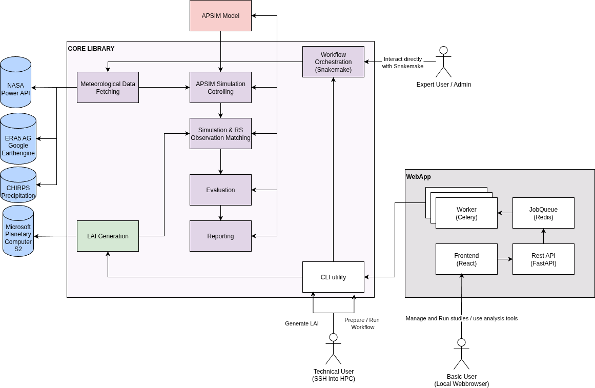

VeRCYe Documentation
This documentation aims to provide a comprehensive guide to running the Versatile Crop Yield Estimate (VeRCYe) pipeline. The original VeRCYe algorithm is published here.
Overview
The VeRCYe Repository contains a number of components:
- The VerCYe Library: Contains all steps to run the VeRCYe algorithm as individual python scripts. The scripts are orchestrated into a pipeline using
Snakemake. In general the library is split into two components:- LAI Generation: Downloads remotely sensed imagery and predicst Leaf Area Index (LAI) values per pixel.
- Yield Simulation and Prediction: Simulate numerous likely configurations using APSIM and identify the best-matching simulations with the LAI data. This step also includes evaluation and reporting tools.
- The VeRCYe Webapp: Provides a webapp wrapper around the core library. Runs a backend and a frontend service that facilitate using VeRCYe operationally.
VeRCYe Library Setup
0. Clone this repository
git clone https://github.com/JPLMLIA/vercye_ops.git
1. Check Python Version and GDAL
This repository has been tested and run with python 3.13.5 and with gdal==3.11.0. Ensure you have installed the corresponding versions (python --version and gdalinfo --version). It might or might not work with other versions.
2. Install the requirements
It is reccomended to use a conda environement. Ensure you have conda installed. Navigate to this package's root directory and run:
conda create --name vercye python=3.13.5
conda activate vercye
conda install -c conda-forge gdal=3.11
pip install -r requirements.txt
Currently we are mixing pip and conda dependancies.
Note: As of June 2024, if using
conda, for all requirements you may also need to installSnakemakeand a specific dependency manually via pip:
bash pip install snakemake pulp==2.7.0
3. Install the VeRCYe package
From the root directory, run:
pip install -e .
4. Install APSIMX
The simulations that produce yield predictions and phenology are run using the process based APSIM NextGen model. There are two options for running APSIM:
- A: Using Docker: Simply set a parameter during configuration of your yield study. The Docker container will build automatically. (Ensure
dockeris installed.). This option isNOT available on UMD systems. - B: Building the APSIM-NextGen binary manually: See instructions in the APSIM Section.
Note: If running on UMD systems, APSIM is pre-installed at:
/gpfs/data1/cmongp2/wronk/Builds/ApsimX/bin/Release/net6.0/ModelsHowever, you might have to installdotnetfrom source as outlined in the APSIM Section.
5. Install jq
To manipulate JSON files via the command line:
- Install from https://jqlang.github.io/jq/
- Or on HPC systems, load it with:
module load jq
5. Authenticate Google Earth Engine
The ERA5 meteorological data is currently still fetched through Google Earth Engine. For this to work, you will have to authenticate yourself with earth engine.
Run ee authenticate and follow the instructions on the screen.
Running your first yield study
Quickstart
The VeRCYe CLI allows you to get your yield study up an running quickly. However, if you want more options to cutomize different hyperparameters in a more structured way, you might want to run the study manually, as outlined in the next section.
- Activate your virtual environment (depending on your venv setup). E.g:
conda activate vercye
- Initialize a new yield study.
vercye init --name your-study-name --dir /path/to/study/store
-
[Optional] Download remotely sensed imagery & create LAI.
-
Only required if the LAI data for your region of interest is not yet available locally.
- Fill in the lai configuration under
/path/to/study/store/lai_config.yaml. - Run the following command to download the imagery:
vercye lai --name your-study-name --dir /path/to/study/store
-
Prepare your study
-
Fill in the run congfiguration under
/path/to/study/store/setup_config.yaml. - Run the following command to create your study directory and config template.
vercye prep --name your-study-name --dir /path/to/study/store
-
Set your run options
-
Fill in the run congfiguration under
/path/to/study/store/study/config.yaml. -
If you already had the LAI data available locally, ensure to adapt the
lai_dir,lai_regionandlai_resolution. -
[Optional] Download the chirps data.
-
Only required if chirps data is not yet downloaded for the complete study range.
- Ensure you have completed step 4, and have set
apsim_params.chirps_dircorrectly in/path/to/study/store/study/config.yaml.
vercye chirps --name your-study-name --dir /path/to/study/store
-
Run your study
-
You might want to adapt the number of cores to use in /path/to/study/store depending on your system.
vercye run --name your-study-name --dir /path/to/study/store/profile/config.yaml
Running VeRCYe manually
While the CLI provides a convenient way to run a yield study, for larger experiments with different configurations, you might want more freedom. For this the general process is as follows:
-
You will first have to generate LAI data from remotely sensed imagery. Refer to the LAI Creation Guide for details.
-
Once you have generated the LAI data, you can run your yield study, by following the Running a Yieldstudy Guide.
VeRCYe Webapp Setup
On information for setting up and running the webapp, visit the Webapp Section.
Technical Details

- Library Details: The technical implementation details of the vercye library are outlined in the VeRCYe Architecture Section. Fore more details check out the code in
vercye_ops. - Webapp Details: The details on architectural decisions of the webapp are documented under VeRCYe Webapp.
Development
Development tips and best practices are documented under Development Tipps